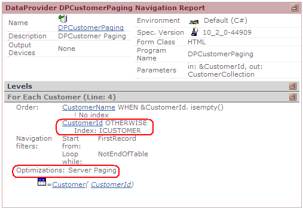

In an effort to achieve more efficient applications, the issue of slow response time in database queries that return large volumes of data has been addressed. So far, and with a feature known as data paging, all DBMS have implemented mechanisms to solve this. Paging basically consists of dividing the information that results from a query into smaller, easier to read blocks, and significantly reduces the quantity of data sent from server to client. GeneXus provides this feature from the client, both in the User Interface (through grids with paging) and in Data Provider. However, in the GeneXus X Evolution 2 version, the DBMS feature is leveraged to achieve more efficiency on the server side when generating Data Providers. In the navigation of those Data Providers, this improvement will be indicated as shown below: Optimization: Server Paging ExampleThis improvement may be explained with a simple example. Given the following Clients transaction:
Clients
{
CustomerId*
CustomerDescription
}
If we write the following Data Provider:
CustomerCollection
{
CustomerCollectionItem [skip=5] [count=5]
{
CustomerId
CustomerName
}
}
In versions older than GeneXus X Evolution 2, the paging optimization in the server was not indicated, and the SQL sentence generated was (in MSSQL Server): SELECT [CustomerId], [CustomerName] FROM [Customer] WITH (NOLOCK) ORDER BY [CustomerId] In GeneXus X Evolution 2, when navigating the same object the display is as follows: Optimizations: Server Paging And the generated SQL sentence (in MSSQL server) is:
SELECT * FROM (SELECT [CustomerId], [CustomerName], ROW_NUMBER() OVER ( ORDER BY [CustomerId] ) AS GX_ROW_NUMBER FROM [Customer] WITH (NOLOCK)) AS GX_CTE
WHERE GX_ROW_NUMBER BETWEEN @GXPagingFrom2 AND @GXPagingTo2 OR @GXPagingTo2 < @GXPagingFrom2 AND GX_ROW_NUMBER >= @GXPagingFrom2
Likewise, in the case of a Grid with paging, this feature will also be provided by the DBMS. Setting a value other than 0 in the "Rows" property of the Grid will be enough to indicate that the Grid to be used must include paging. This will cause GeneXus to generate automatic paging (using manual paging through the FirstPage, PreviousPage, NextPage or LastPage events is also a possibility). Both cases have been optimized in GX X Ev2. In older versions, similarly to what was explained for Data Providers, the SQL sentence generated did not include paging; in GeneXus X Evolution 2, these cases are solved by the DBMS because the generated SELECT also includes paging. One more aspect to considerin in generating optimization is that we need the presence of an Order in the structure. Therefore, if a conditional order exists (order...when) and there is no default order, then GeneXus will automatically consider the primary key of the base associated to the level as a default order for optimization. Consider the Data Provider below:
CustomerCollection order CustomerName when &CustomerId.IsEmpty()
{
CustomerCollectionItem [Count = 5] [Skip = 5]
{
CustomerId
CustomerName
}
}
this is shown in the navigation as we can see in the following image:  ExceptionsWhen one of the conditions used to navigate the Data Provider/Grid (Where conditions) is evaluated in the client, even when it has paging clauses, the paging optimization is not performed in the server. In this case, paging is solved in the client. To be evaluated in the server, the conditions must involve UPD or functions depending of the DBMS. Further information on GeneXus functions evaluated in the server by the DBMS for each one of them, may be found by clicking here. In such a situation, GeneXus will not know how many records to select from the server (because the records would be filtered again in the client), so it will not be able to generate the optimization. The SQL sentence should be able to be mapped entirely with a for each...endfor structure, meaning that control breaks will be out of the optimization. Normally, this applies more to paging in a DP. Another restriction for grids with paging applies to load events with an explicit load command, in which cases the optimization is not generated. In cases of a load event without a load command, GeneXus will try to optimize. The optimization was made in all dbms except Informix. When not supported by the dbms, the optimization message will not be shown in the navigation. NoteIn this document when we refer to 'Server', we refer to Data Base Server and when refer to 'Client' we are refer to Application Server (seeing it as Client of the DB Server) |
| Backlinks |
| Database performance from the GeneXus perspective |
| Grid paging on the Web |
| Order Clause Specification |